pacman::p_load(sf, sfdep, tmap, tidyverse)In-Class Exercise 5 - Global and Local measures of spatial autocorrelation using sfdep package AND Emerging Hot Spot Analysis (EHSA)
1 Global and Local measures of spatial autocorrelation using sfdep package
1.1 Overview
In this exercise, we will use the sfdep package to perform global and local measures of spatial autocorrelation using Hunan’s spatial data. In Hands-on Exercise 5, we learnt to perform spatial autocorrelation using spdep package.
Note
The sfdep and spdep packages in R are both designed for spatial data analysis, particularly focusing on spatial autocorrelation, but they differ in their approach and compatibility with modern R data structures.
spdep: This is the older and more established package for spatial dependence analysis in R. It provides functions for creating spatial weights, spatial lag models, and global and local spatial autocorrelation statistics such as Moran’s I. However, spdep was originally built to work with the
sppackage, which uses the olderSpatial*classes for handling spatial data.sfdep: This is a newer package designed to work seamlessly with the sf package, which has become the standard for handling spatial data in R using simple features. sfdep provides an interface for spatial dependence analysis that is compatible with sf’s
sfobjects (simple feature geometries) and makes extensive use of tidyverse conventions, such as list columns, which allow for more flexible and tidy manipulation of spatial data.
1.1.1 Key Differences:
-
Data Structures:
-
spdep works with
Spatial*objects from thesppackage. -
sfdep works with
sfobjects from thesfpackage, which are easier to integrate with modern R workflows and the tidyverse ecosystem.
-
spdep works with
-
Integration:
- sfdep is more compatible with modern workflows using the tidyverse, allowing for easier manipulation of data within data frames and list columns.
- spdep relies on the older base R style and is less intuitive when working with modern data pipelines.
-
Functionality:
- Both packages provide similar functionalities for spatial autocorrelation, such as computing Moran’s I and local Moran’s I.
- sfdep introduces new functionalities that leverage list columns for easier spatial dependence operations.
sfdep can essentially be considered a wrapper around the functionality provided by spdep, designed to work with the modern sf (simple features) framework for spatial data in R.
1.2 Learning Outcome
- Perform global Moran’s I test for spatial autocorrelation.
- Compute and visualize local Moran’s I and Gi* statistics for identifying clusters and outliers.
- Create choropleth maps to display the results of spatial autocorrelation analysis.
1.3 Import the R Packages
The following R packages will be used in this exercise:
| Package | Purpose | Use Case in Exercise |
|---|---|---|
| sf | Handles spatial data; imports, manages, and processes vector-based geospatial data. | Importing and managing geospatial data, such as Hunan’s county boundary shapefile. |
| sfdep | Provides functions for spatial autocorrelation, including Moran’s I and local Moran’s I. | Performing spatial autocorrelation analysis with global and local measures. |
| tidyverse | A collection of R packages for data science tasks like data manipulation, visualization, and modeling. | Wrangling aspatial data and joining with spatial datasets. |
| tmap | Creates static and interactive thematic maps using cartographic quality elements. | Visualizing spatial analysis results and creating thematic maps. |
To install and load these packages, use the following code:
1.4 The Data
The following datasets will be used in this exercise:
| Data Set | Description | Format |
|---|---|---|
| Hunan County Boundary Layer | A geospatial dataset containing Hunan’s county boundaries. | ESRI Shapefile |
| Hunan_2012.csv | A CSV file containing selected local development indicators for Hunan in 2012. | CSV |
hunan <- st_read(dsn = "data/geospatial",
layer = "Hunan")Reading layer `Hunan' from data source
`D:\ssinha8752\ISSS608-VAA\In-class_Ex\In-class_Ex05\data\geospatial'
using driver `ESRI Shapefile'
Simple feature collection with 88 features and 7 fields
Geometry type: POLYGON
Dimension: XY
Bounding box: xmin: 108.7831 ymin: 24.6342 xmax: 114.2544 ymax: 30.12812
Geodetic CRS: WGS 84glimpse(hunan)Rows: 88
Columns: 8
$ NAME_2 <chr> "Changde", "Changde", "Changde", "Changde", "Changde", "Cha…
$ ID_3 <int> 21098, 21100, 21101, 21102, 21103, 21104, 21109, 21110, 211…
$ NAME_3 <chr> "Anxiang", "Hanshou", "Jinshi", "Li", "Linli", "Shimen", "L…
$ ENGTYPE_3 <chr> "County", "County", "County City", "County", "County", "Cou…
$ Shape_Leng <dbl> 1.869074, 2.360691, 1.425620, 3.474325, 2.289506, 4.171918,…
$ Shape_Area <dbl> 0.10056190, 0.19978745, 0.05302413, 0.18908121, 0.11450357,…
$ County <chr> "Anxiang", "Hanshou", "Jinshi", "Li", "Linli", "Shimen", "L…
$ geometry <POLYGON [°]> POLYGON ((112.0625 29.75523..., POLYGON ((112.2288 …
Tip
For admin boundaries, we will typically encounter polygon or multipolygon data objects.
A polygon represents a single contiguous area, while a multipolygon consists of multiple disjoint areas grouped together (e.g., islands that belong to the same admin region).
hunan2012 <- read_csv("data/aspatial/Hunan_2012.csv")
glimpse(hunan2012)Rows: 88
Columns: 29
$ County <chr> "Anhua", "Anren", "Anxiang", "Baojing", "Chaling", "Changn…
$ City <chr> "Yiyang", "Chenzhou", "Changde", "Hunan West", "Zhuzhou", …
$ avg_wage <dbl> 30544, 28058, 31935, 30843, 31251, 28518, 54540, 28597, 33…
$ deposite <dbl> 10967.0, 4598.9, 5517.2, 2250.0, 8241.4, 10860.0, 24332.0,…
$ FAI <dbl> 6831.7, 6386.1, 3541.0, 1005.4, 6508.4, 7920.0, 33624.0, 1…
$ Gov_Rev <dbl> 456.72, 220.57, 243.64, 192.59, 620.19, 769.86, 5350.00, 1…
$ Gov_Exp <dbl> 2703.0, 1454.7, 1779.5, 1379.1, 1947.0, 2631.6, 7885.5, 11…
$ GDP <dbl> 13225.0, 4941.2, 12482.0, 4087.9, 11585.0, 19886.0, 88009.…
$ GDPPC <dbl> 14567, 12761, 23667, 14563, 20078, 24418, 88656, 10132, 17…
$ GIO <dbl> 9276.90, 4189.20, 5108.90, 3623.50, 9157.70, 37392.00, 513…
$ Loan <dbl> 3954.90, 2555.30, 2806.90, 1253.70, 4287.40, 4242.80, 4053…
$ NIPCR <dbl> 3528.3, 3271.8, 7693.7, 4191.3, 3887.7, 9528.0, 17070.0, 3…
$ Bed <dbl> 2718, 970, 1931, 927, 1449, 3605, 3310, 582, 2170, 2179, 1…
$ Emp <dbl> 494.310, 290.820, 336.390, 195.170, 330.290, 548.610, 670.…
$ EmpR <dbl> 441.4, 255.4, 270.5, 145.6, 299.0, 415.1, 452.0, 127.6, 21…
$ EmpRT <dbl> 338.0, 99.4, 205.9, 116.4, 154.0, 273.7, 219.4, 94.4, 174.…
$ Pri_Stu <dbl> 54.175, 33.171, 19.584, 19.249, 33.906, 81.831, 59.151, 18…
$ Sec_Stu <dbl> 32.830, 17.505, 17.819, 11.831, 20.548, 44.485, 39.685, 7.…
$ Household <dbl> 290.4, 104.6, 148.1, 73.2, 148.7, 211.2, 300.3, 76.1, 139.…
$ Household_R <dbl> 234.5, 121.9, 135.4, 69.9, 139.4, 211.7, 248.4, 59.6, 110.…
$ NOIP <dbl> 101, 34, 53, 18, 106, 115, 214, 17, 55, 70, 44, 84, 74, 17…
$ Pop_R <dbl> 670.3, 243.2, 346.0, 184.1, 301.6, 448.2, 475.1, 189.6, 31…
$ RSCG <dbl> 5760.60, 2386.40, 3957.90, 768.04, 4009.50, 5220.40, 22604…
$ Pop_T <dbl> 910.8, 388.7, 528.3, 281.3, 578.4, 816.3, 998.6, 256.7, 45…
$ Agri <dbl> 4942.253, 2357.764, 4524.410, 1118.561, 3793.550, 6430.782…
$ Service <dbl> 5414.5, 3814.1, 14100.0, 541.8, 5444.0, 13074.6, 17726.6, …
$ Disp_Inc <dbl> 12373, 16072, 16610, 13455, 20461, 20868, 183252, 12379, 1…
$ RORP <dbl> 0.7359464, 0.6256753, 0.6549309, 0.6544614, 0.5214385, 0.5…
$ ROREmp <dbl> 0.8929619, 0.8782065, 0.8041262, 0.7460163, 0.9052651, 0.7…
Note
Recall that to do left join, we need a common identifier between the 2 data objects. The content must be the same eg. same format and same case. In Hands-on Exercise 1B, we need to (PA, SZ) in the dataset to uppercase before we can join the data.
hunan <- left_join(hunan,hunan2012) %>%
select(1:4, 7, 15)
glimpse(hunan)Rows: 88
Columns: 7
$ NAME_2 <chr> "Changde", "Changde", "Changde", "Changde", "Changde", "Chan…
$ ID_3 <int> 21098, 21100, 21101, 21102, 21103, 21104, 21109, 21110, 2111…
$ NAME_3 <chr> "Anxiang", "Hanshou", "Jinshi", "Li", "Linli", "Shimen", "Li…
$ ENGTYPE_3 <chr> "County", "County", "County City", "County", "County", "Coun…
$ County <chr> "Anxiang", "Hanshou", "Jinshi", "Li", "Linli", "Shimen", "Li…
$ GDPPC <dbl> 23667, 20981, 34592, 24473, 25554, 27137, 63118, 62202, 7066…
$ geometry <POLYGON [°]> POLYGON ((112.0625 29.75523..., POLYGON ((112.2288 2…1.5 Visualising Choropleth Map of GDPPC of Hunan
To plot a choropleth map showing the distribution of GDPPC of Hunan province:
tmap_mode("plot")
tm_shape(hunan) +
tm_fill("GDPPC",
style = "quantile",
palette = "Blues",
title = "GDPPC") +
tm_layout(main.title = "Distribution of GDP per capita by county, Hunan Province",
main.title.position = "center",
main.title.size = 1.2,
legend.height = 0.45,
legend.width = 0.35,
frame = TRUE) +
tm_borders(alpha = 0.5) +
tm_compass(type="8star", size = 2) +
tm_scale_bar() +
tm_grid(alpha =0.2)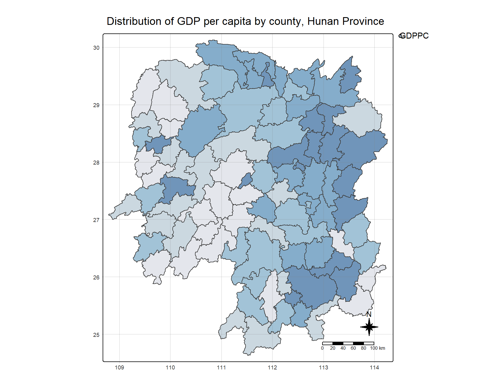
1.6 Global Measures of Spatial Association
1.6.1 Deriving Queen’s contiguity weights: sfdep methods
To derive the Queen’s contiguity weights:
wm_q <- hunan %>%
mutate(nb = st_contiguity(geometry),
wt = st_weights(nb,
style = "W"),
.before = 1)
Tip
Notice that st_weights() provides tree arguments, they are:
- nb: A neighbor list object as created by st_neighbors().
- style: Default “W” for row standardized weights. This value can also be “B”, “C”, “U”, “minmax”, and “S”. B is the basic binary coding, W is row standardised (sums over all links to n), C is globally standardised (sums over all links to n), U is equal to C divided by the number of neighbours (sums over all links to unity), while S is the variance-stabilizing coding scheme proposed by Tiefelsdorf et al. 1999, p. 167-168 (sums over all links to n).
- allow_zero: If TRUE, assigns zero as lagged value to zone without neighbors.
1.6.2 Computing Global Moran’ I
We will use global_moran() function to compute the Moran’s I value.
moranI <- global_moran(
wm_q$GDPPC, # Target variable: GDP per capita
wm_q$nb, # Neighborhood structure
wm_q$wt # Spatial weights
)
glimpse(moranI)List of 2
$ I: num 0.301
$ K: num 7.64
Tip
Unlike the spdep package, the output of the global_moran() function is a tibble data frame, making it easier to work with in the tidyverse environment.
1.7 Performing Global Moran’s I Test
Tip
Previously, we calculated the Moran’s I statistic using the global_moran() function. However, this approach does not allow for formal hypothesis testing, as it only returns the Moran’s I value, not the associated p-value or significance level. Therefore, we cannot determine whether spatial autocorrelation is statistically significant with this method.
To conduct a proper hypothesis test, we need to use the global_moran_test() function from the sfdep package, which computes the Moran’s I statistic and also performs a permutation-based significance test. This allows us to assess whether the observed spatial autocorrelation is significantly different from what would be expected under spatial randomness.
The following code demonstrates how to perform the Moran’s I test:
global_moran_test(
wm_q$GDPPC, # Target variable: GDP per capita
wm_q$nb, # Neighborhood structure
wm_q$wt # Spatial weights
)
Moran I test under randomisation
data: x
weights: listw
Moran I statistic standard deviate = 4.7351, p-value = 1.095e-06
alternative hypothesis: greater
sample estimates:
Moran I statistic Expectation Variance
0.300749970 -0.011494253 0.004348351
Tip
- The default for
alternativeargument is “two.sided”. Other supported arguments are “greater” or “less”. randomization, and - By default the
randomizationargument is TRUE. If FALSE, under the assumption of normality.
This method not only calculates the Moran’s I statistic but also provides a p-value for assessing the significance of the spatial autocorrelation.
Note
Observations:
- Moran’s I statistic: 0.301, indicating moderate positive spatial autocorrelation.
- P-value: 1.095e-06, highly significant, confirming strong evidence of positive spatial autocorrelation.
1.8 Perfoming Global Moran’s I Permutation Test
In practice, a Monte Carlo simulation should be used to perform the statistical test. In the sfdep package, this is supported by the global_moran_perm() function.
To ensure that the computation is reproducible, we will use set.seed() before performing simulation.
set.seed(1234)Now we will perform Monte Carlo simulation using global_moran_perm().
global_moran_perm(wm_q$GDPPC,
wm_q$nb,
wm_q$wt,
nsim = 99)
Monte-Carlo simulation of Moran I
data: x
weights: listw
number of simulations + 1: 100
statistic = 0.30075, observed rank = 100, p-value < 2.2e-16
alternative hypothesis: two.sided
Note
Observations:
The statistical report on previous tab shows that the p-value is smaller than alpha value of 0.05. Hence, we have enough statistical evidence to reject the null hypothesis that the spatial distribution of GPD per capita are resemble random distribution (i.e. independent from spatial). Because the Moran’s I statistics is greater than 0. We can infer that the spatial distribution shows sign of clustering.
1.9 Local Measures of Spatial Association
1.10 LISA Map
LISA map is a categorical map showing outliers and clusters. There are two types of outliers namely: High-Low and Low-High outliers. Likewise, there are two type of clusters namely: High-High and Low-Low cluaters. In fact, LISA map is an interpreted map by combining local Moran’s I of geographical areas and their respective p-values.
1.11 Computing Local Moran’s I
In this section, we will compute Local Moran’s I of GDPPC at county level by using local_moran() of sfdep package.
lisa <- wm_q %>%
mutate(local_moran = local_moran(
GDPPC, nb, wt, nsim = 99),
.before = 1) %>%
unnest(local_moran)
Tip
- We use
unnest()in this context to convert the nested list column created bylocal_moran()into multiple rows, one for each simulation result per observation. - The
local_moran()function from thesfdeppackage returns a nested list, with each element containing the results of local Moran’s I statistic for each spatial unit. - Unnesting helps in expanding this list into individual rows, making each result (e.g., local Moran’s I values, p-values) accessible in a tidy, flat data frame format.
- This step is crucial for easier manipulation, filtering, and visualization of the spatial autocorrelation results, allowing us to work with the data in a more intuitive and flexible way.
Thus, unnest() is applied to handle and process the simulation results efficiently.
The output of local_moran() is a sf data.frame containing the columns ii, eii, var_ii, z_ii, p_ii, p_ii_sim, and p_folded_sim.
- ii: local moran statistic
- eii: expectation of local moran statistic; for localmoran_permthe permutation sample means
- var_ii: variance of local moran statistic; for localmoran_permthe permutation sample standard deviations
- z_ii: standard deviate of local moran statistic; for localmoran_perm based on permutation sample means and standard deviations p_ii: p-value of local moran statistic using pnorm(); for localmoran_perm using standard deviatse based on permutation sample means and standard deviations p_ii_sim: For
localmoran_perm(),rank()andpunif()of observed statistic rank for [0, 1] p-values usingalternative=-p_folded_sim: the simulation folded [0, 0.5] range ranked p-value (based on https://github.com/pysal/esda/blob/4a63e0b5df1e754b17b5f1205b cadcbecc5e061/esda/crand.py#L211-L213) - skewness: For
localmoran_perm, the output of e1071::skewness() for the permutation samples underlying the standard deviates - kurtosis: For
localmoran_perm, the output of e1071::kurtosis() for the permutation samples underlying the standard deviates.
1.12 Visualising Local Moran’s I and p-value
When interpreting / visualizing local Moran’s I, we should plot the Moran’s I and p-value side by side.
tmap_mode("plot")
map1 <- tm_shape(lisa) +
tm_fill("ii") +
tm_borders(alpha = 0.5) +
tm_view(set.zoom.limits = c(6,8)) +
tm_layout(
main.title = "Local Moran's I of GDPPC",
main.title.size = 0.8
)
map2 <- tm_shape(lisa) +
tm_fill("p_ii") +
tm_borders(alpha = 0.5) +
tm_view(set.zoom.limits = c(6,8)) +
tm_layout(
main.title = "p-value of Local Moran's I",
main.title.size = 0.8
)
tmap_arrange(map1, map2, ncol = 2)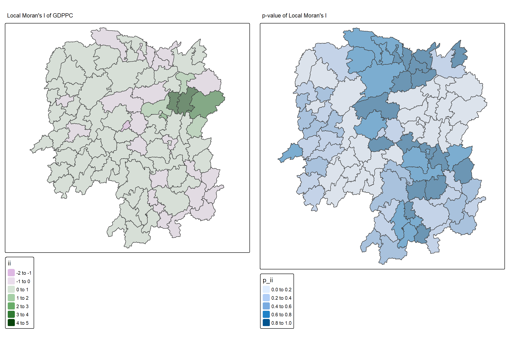
1.12.1 Plotting LISA Map
In lisa sf data.frame, we can find three fields contain the LISA categories. They are mean, median and pysal. In general, classification in mean will be used as shown in the code below.
lisa_sig <- lisa %>%
filter(p_ii_sim < 0.05)
tmap_mode("plot")
tm_shape(lisa) +
tm_polygons() +
tm_borders(alpha = 0.5) +
tm_shape(lisa_sig) +
tm_fill("mean") +
tm_borders(alpha = 0.4)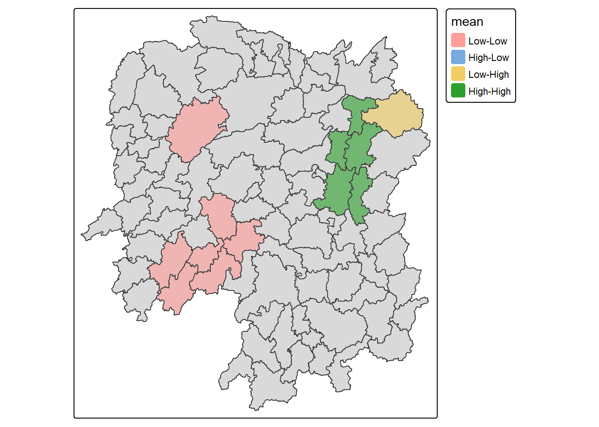
1.13 Hot Spot and Cold Spot Area Analysis
Hot Spot and Cold Spot Analysis (HCSA) uses spatial weights to identify locations of statistically significant hot spots and cold spots within a spatially weighted attribute. These spots are identified based on a calculated distance that groups features when similar high (hot) or low (cold) values are found in proximity to one another. The polygon features typically represent administrative boundaries or a custom grid structure.
1.13.1 Computing local Gi* statistics
As usual, we will need to derive a spatial weight matrix before we can compute local Gi* statistics. Code chunk below will be used to derive a spatial weight matrix by using sfdep functions and tidyverse approach.
wm_idw <- hunan %>%
mutate(nb = include_self(
st_contiguity(geometry)),
wts = st_inverse_distance(nb,
geometry,
scale = 1,
alpha = 1),
.before = 1)
Tip
- Gi* and local Gi* are distance-based spatial statistics. Hence, distance methods instead of contiguity methods should be used to derive the spatial weight matrix.
- Since we are going to compute Gi* statistics,
include_self()is used.
1.13.2 Computing Local Gi* statistics
Now, we will compute the local Gi* by using the code below.
HCSA <- wm_idw %>%
mutate(local_Gi = local_gstar_perm(
GDPPC, nb, wts, nsim = 99),
.before = 1) %>%
unnest(local_Gi)
HCSASimple feature collection with 88 features and 18 fields
Geometry type: POLYGON
Dimension: XY
Bounding box: xmin: 108.7831 ymin: 24.6342 xmax: 114.2544 ymax: 30.12812
Geodetic CRS: WGS 84
# A tibble: 88 × 19
gi_star cluster e_gi var_gi std_dev p_value p_sim p_folded_sim skewness
<dbl> <fct> <dbl> <dbl> <dbl> <dbl> <dbl> <dbl> <dbl>
1 0.261 Low 0.00126 1.07e-7 0.283 7.78e-1 0.66 0.33 0.783
2 -0.276 Low 0.000969 4.76e-8 -0.123 9.02e-1 0.98 0.49 0.713
3 0.00573 High 0.00156 2.53e-7 -0.0571 9.54e-1 0.78 0.39 0.972
4 0.528 High 0.00155 2.97e-7 0.321 7.48e-1 0.56 0.28 0.942
5 0.466 High 0.00137 2.76e-7 0.386 7.00e-1 0.52 0.26 1.32
6 -0.445 High 0.000992 7.08e-8 -0.588 5.57e-1 0.68 0.34 0.692
7 2.99 High 0.000700 4.05e-8 3.13 1.74e-3 0.04 0.02 0.975
8 2.04 High 0.00152 1.58e-7 1.77 7.59e-2 0.16 0.08 1.26
9 4.42 High 0.00130 1.18e-7 4.22 2.39e-5 0.02 0.01 1.20
10 1.21 Low 0.00175 1.25e-7 1.49 1.36e-1 0.18 0.09 0.408
# ℹ 78 more rows
# ℹ 10 more variables: kurtosis <dbl>, nb <nb>, wts <list>, NAME_2 <chr>,
# ID_3 <int>, NAME_3 <chr>, ENGTYPE_3 <chr>, County <chr>, GDPPC <dbl>,
# geometry <POLYGON [°]>1.13.3 Visualising Local Hot Spot and Cold Spot Areas (HCSA)
Similarly, for effective comparison, we should plot the local Gi* values with its p-value.
tmap_mode("plot")
map1 <- tm_shape(HCSA) +
tm_fill("gi_star") +
tm_borders(alpha = 0.5) +
tm_view(set.zoom.limits = c(6,8)) +
tm_layout(main.title = "Gi* of GDPPC",
main.title.size = 0.8)
map2 <- tm_shape(HCSA) +
tm_fill("p_value",
breaks = c(0, 0.001, 0.01, 0.05, 1),
labels = c("0.001", "0.01", "0.05", "Not sig")) +
tm_borders(alpha = 0.5) +
tm_layout(main.title = "p-value of Gi*",
main.title.size = 0.8)
tmap_arrange(map1, map2, ncol = 2)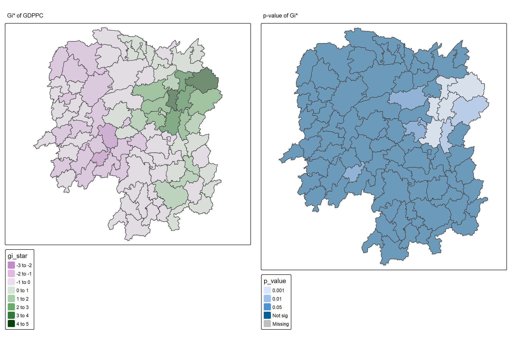
To visualize HCSA, we will plot the significant (i.e. p-values less than 0.05) hot spot and cold spot areas by using appropriate tmap functions as shown below.
HCSA_sig <- HCSA %>%
filter(p_sim < 0.05)
tmap_mode("plot")
tm_shape(HCSA) +
tm_polygons() +
tm_borders(alpha = 0.5) +
tm_shape(HCSA_sig) +
tm_fill("cluster") +
tm_borders(alpha = 0.4)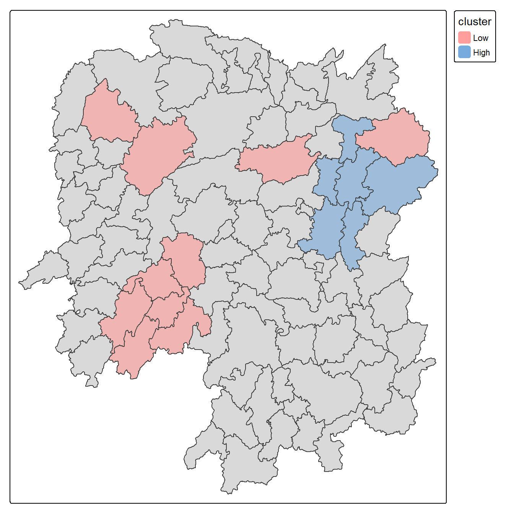
Note
Observations: The plot reveals that there is one hot spot area and two cold spot areas. Interestingly, the hot spot areas coincide with the High-high cluster identifies by using local Moran’s I method in the earlier sub-section.
2 Emerging Hot Spot Analysis (EHSA)
2.1 Overview
In this exercise, we will explore Emerging Hot Spot Analysis (EHSA), a spatio-temporal analysis method for identifying and categorizing hot and cold spot trends over time in a spatial dataset.
- Load and install R packages for spatio-temporal analysis.
- Create a space-time cube using geospatial and temporal data.
- Calculate Gi* statistics and use the Mann-Kendall test to detect monotonic trends.
- Perform Emerging Hot Spot Analysis using spatio-temporal data.
- Visualize the results of EHSA with spatial and temporal trends.
2.2 Import the R Packages
The following R packages will be used in this exercise:
| Package | Purpose | Use Case in Exercise |
|---|---|---|
| sf | Handles spatial data; imports, manages, and processes vector-based geospatial data. | Importing and managing geospatial data, such as Hunan’s county boundary shapefile. |
| sfdep | Provides functions for spatial autocorrelation and temporal analysis, including Emerging Hot Spot Analysis (EHSA). | Performing spatio-temporal analysis using Gi* statistics and Mann-Kendall test. |
| plotly | Creates interactive plots in R. | Visualizing spatio-temporal trends with interactive plots. |
| tidyverse | A collection of R packages for data science tasks like data manipulation, visualization, and modeling. | Wrangling aspatial data and joining it with geospatial datasets. |
| Kendall | Provides functions for performing the Mann-Kendall test for detecting trends in time series data. | Performing the Mann-Kendall test to assess the trends in Gi* statistics over time. |
To install and load these packages, use the following code:
pacman::p_load(sf, sfdep, tmap, plotly, tidyverse, Kendall)2.3 The Data
The following datasets will be used in this exercise:
| Data Set | Description | Format |
|---|---|---|
| Hunan | A geospatial dataset containing Hunan’s county boundaries. | ESRI Shapefile |
| Hunan_GDPPC | A CSV file containing GDP per capita data of Hunan from 2000 to 2012. | CSV |
Similar to hands-on exercises, import the datasets accordingly:
hunan <- st_read(dsn = "data/geospatial",
layer = "Hunan")Reading layer `Hunan' from data source
`D:\ssinha8752\ISSS608-VAA\In-class_Ex\In-class_Ex05\data\geospatial'
using driver `ESRI Shapefile'
Simple feature collection with 88 features and 7 fields
Geometry type: POLYGON
Dimension: XY
Bounding box: xmin: 108.7831 ymin: 24.6342 xmax: 114.2544 ymax: 30.12812
Geodetic CRS: WGS 84GDPPC <- read_csv("data/aspatial/Hunan_GDPPC.csv")2.4 Creating a Time Series Cube
Note
Relevant Reading Material: spacetime and spacetime cubes • sfdep
A space-time cube represents spatio-temporal data, combining location and time to study trends, often used for identifying patterns like hot spots. It is popular for its ability to handle large datasets, and it is available in ArcGIS.
In R, it can be implemented for free using libraries like sfdep. The implementation in R follows tidyverse principles.
Constraints: - Spatial locations (geometry) must be static. - Time and data values can be dynamic.
Good for:
- Tracking consistent locations over time (e.g., temperature changes in cities where admin boundaries are static).
Not ideal for:
- Events where boundaries shift, like forest fires, where the area or size of the fire evolves.
To create a spatio-temporal cube:
GDPPC_st <- spacetime(GDPPC, hunan,
.loc_col = "County",
.time_col = "Year")And it is always good to verify that we created a valid spacetime_cube object.
is_spacetime_cube(GDPPC_st)[1] TRUE2.5 Computing Gi*
Next, we will compute the local Gi* statistics.
2.5.1 Deriving the spatial weights
To identify neighbors and to derive an inverse distance weights:
Tip
-
activate("geometry"): Activates the geometry context for spatial operations. -
mutate(): Adds two columns:-
nb: Neighbors, including the observation itself (include_self), using spatial contiguity (st_contiguity). -
wt: Weights, calculated with inverse distance (st_inverse_distance).
-
-
set_nbs()andset_wts(): Copies neighbors and weights to all time-slices. Ensure row order consistency after using these functions.
GDPPC_nb <- GDPPC_st %>%
activate("geometry") %>%
mutate(nb = include_self(
st_contiguity(geometry)),
wt = st_inverse_distance(nb,
geometry,
scale = 1,
alpha = 1),
.before = 1) %>%
set_nbs("nb") %>%
set_wts("wt")Note that this dataset now has neighbors and weights for each time-slice.
To calculate the local Gi* statistic for each location:
- Group by Year: This ensures we calculate Gi* separately for each year in the dataset.
-
Use
local_gstar_perm(): This function computes the local Gi* statistic using the GDPPC values, neighbors (nb), and weights (wt). -
Unnest the Gi* results: The
gi_starcolumn is nested, so we useunnest()to extract the results into a clean format.
gi_stars <- GDPPC_nb %>%
group_by(Year) %>%
mutate(gi_star = local_gstar_perm(
GDPPC, nb, wt)) %>%
tidyr::unnest(gi_star)2.6 Mann-Kendall Test
Important
A monotonic series or function is one that only increases (or decreases) and never changes direction. So long as the function either stays flat or continues to increase, it is monotonic.
\(H_0\): No monotonic trend
\(H_1\): Monotonic trend is present
Interpretation
- Reject the null-hypothesis null if the p-value is smaller than the alpha value (i.e. 1-confident level)
- Tau ranges between -1 and 1 where:
- -1 is a perfectly decreasing series, and
- 1 is a perfectly increasing series.
2.6.1 Mann-Kendall Test on Gi
To evaluate trends in Gi* measures over time using the Mann-Kendall test for a specific location, like Changsha county:
Filter data for Changsha:
cbg <- gi_stars %>%
ungroup() %>%
filter(County == "Changsha") %>%
select(County, Year, gi_star)Plot the Gi* values over time using ggplot2:
p <- ggplot(data = cbg,
aes(x = Year,
y = gi_star)) +
geom_line() +
theme_light()
ggplotly(p)To print Mann-Kendall test report:
cbg %>%
summarise(mk = list(
unclass(
Kendall::MannKendall(gi_star)))) %>%
tidyr::unnest_wider(mk)# A tibble: 1 × 5
tau sl S D varS
<dbl> <dbl> <dbl> <dbl> <dbl>
1 0.485 0.00742 66 136. 589.
Note
Observations:
In the above result, sl is the p-value. With reference to the results, we will reject the null hypothesis and infer that a slight upward trend.
2.6.2 Mann-Kendall test data.frame
To replicate this for each location by using group_by() of dplyr package:
ehsa <- gi_stars %>%
group_by(County) %>%
summarise(mk = list(
unclass(
Kendall::MannKendall(gi_star)))) %>%
tidyr::unnest_wider(mk)
head(ehsa)# A tibble: 6 × 6
County tau sl S D varS
<chr> <dbl> <dbl> <dbl> <dbl> <dbl>
1 Anhua 0.191 0.303 26 136. 589.
2 Anren -0.294 0.108 -40 136. 589.
3 Anxiang 0 1 0 136. 589.
4 Baojing -0.691 0.000128 -94 136. 589.
5 Chaling -0.0882 0.650 -12 136. 589.
6 Changning -0.750 0.0000318 -102 136. 589.And sort to show significant emerging hot/cold spots:
# A tibble: 6 × 6
County tau sl S D varS
<chr> <dbl> <dbl> <dbl> <dbl> <dbl>
1 Shuangfeng 0.868 0.00000143 118 136. 589.
2 Xiangtan 0.868 0.00000143 118 136. 589.
3 Xiangxiang 0.868 0.00000143 118 136. 589.
4 Chengbu -0.824 0.00000482 -112 136. 589.
5 Dongan -0.824 0.00000482 -112 136. 589.
6 Wugang -0.809 0.00000712 -110 136. 589.2.7 Performing Emerging Hotspot Analysis
To perform Emerging Hotspot Analysis (EHSA), we can use the emerging_hotspot_analysis() function from the sfdep package. This function analyzes spatio-temporal trends by detecting areas that are hotspots over time. It takes the following parameters: - x: The spacetime object (e.g., GDPPC_st). - .var: The variable of interest (e.g., "GDPPC"). - k: Number of time lags (default is 1). - nsim: Number of simulations to run (e.g., 99).
set.seed(1234)
ehsa <- emerging_hotspot_analysis(
x = GDPPC_st,
.var = "GDPPC",
k = 1,
nsim = 99
)ehsa# A tibble: 88 × 4
location tau p_value classification
<chr> <dbl> <dbl> <chr>
1 Anxiang 0.221 0.232 sporadic coldspot
2 Hanshou 0.147 0.434 sporadic hotspot
3 Jinshi 0.441 0.0151 oscilating hotspot
4 Li -0.824 0.00000482 sporadic coldspot
5 Linli 0.118 0.537 oscilating hotspot
6 Shimen -0.471 0.00946 oscilating coldspot
7 Liuyang 0.868 0.00000143 sporadic hotspot
8 Ningxiang -0.559 0.00201 sporadic coldspot
9 Wangcheng -0.162 0.387 sporadic coldspot
10 Anren 0.456 0.0120 sporadic coldspot
# ℹ 78 more rows2.7.1 Visualising the Distribution of EHSA classes
To visualize the EHSA classification distribution using a bar chart with ggplot2:
ggplot(data = ehsa, aes(x = classification)) +
geom_bar()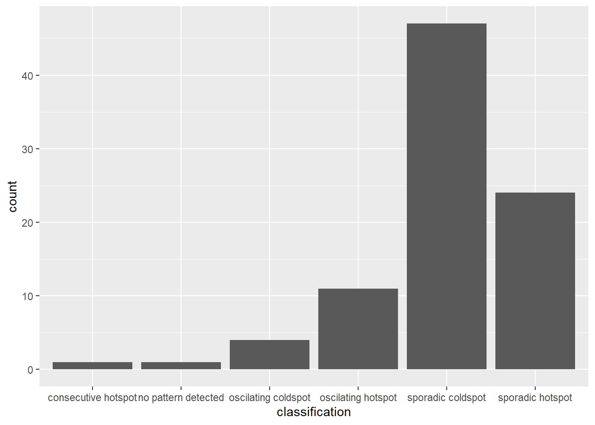
The bar char shows that sporadic cold spots class has the high numbers of county.
Important
Note that in the above plot, we did not filter for statistically significant EHSA results, which may be misleading for our analysis
To filter for statistically significant EHSA results, we should focus on locations where the p_value is below a threshold (< 0.05).
ehsa_significant <- ehsa %>%
filter(p_value < 0.05)
ggplot(data = ehsa_significant, aes(x = classification)) +
geom_bar()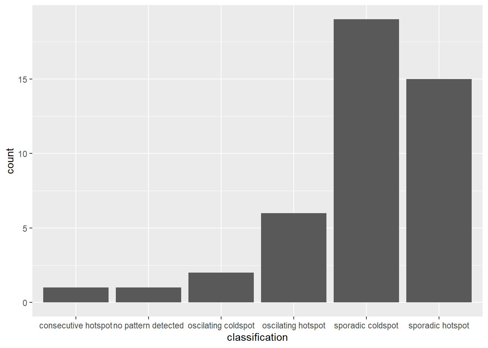
This will display a bar chart showing the distribution of EHSA classes for locations with statistically significant results. Note that the distribution is similar, but the magnitude is smaller after filtering.
2.7.2 Visualising EHSA
To visualise the geographic distribution EHSA classes, we need to join both hunan and ehsa together before creating the plot. Note that in this case, we have filtered for statistically significant results.
hunan_ehsa <- hunan %>%
left_join(ehsa,
by = join_by(County == location))
ehsa_sig <- hunan_ehsa %>%
filter(p_value < 0.05)
tmap_mode("plot")
tm_shape(hunan_ehsa) +
tm_polygons() +
tm_borders(alpha = 0.5) +
tm_shape(ehsa_sig) +
tm_fill("classification") +
tm_borders(alpha = 0.4)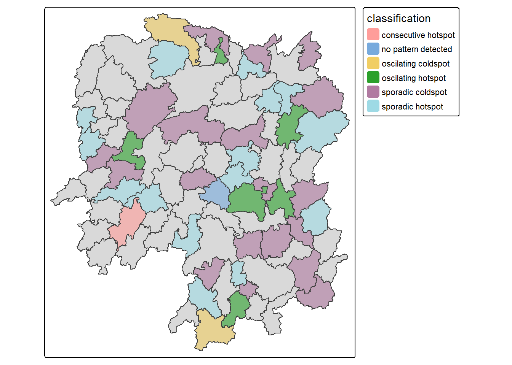
2.7.3 Interpretation of EHSA classes
Additional Notes
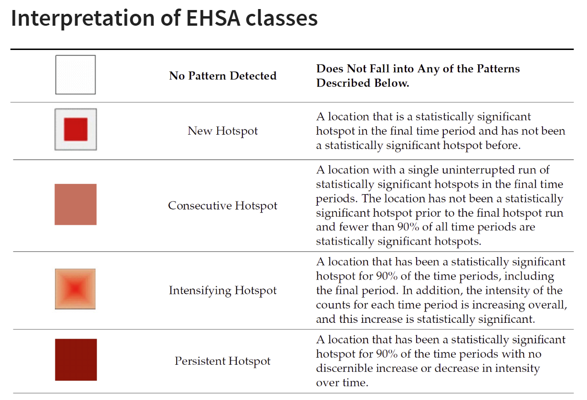
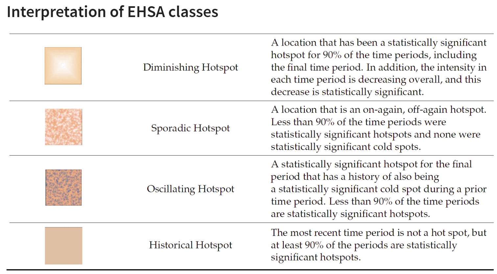
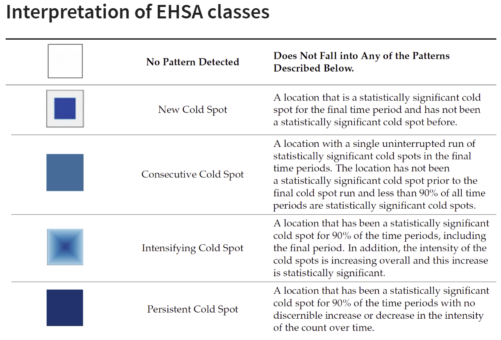
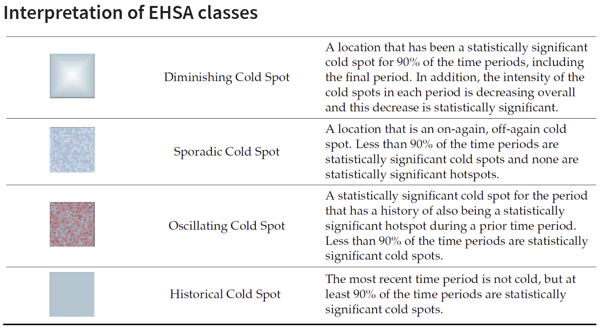
Note
Final Notes:
EHSA and the Mann-Kendall test complement each other by analyzing spatio-temporal data in different ways.
The Mann-Kendall test checks for monotonic trends without randomization or permutation, calculating a tau value that indicates trend strength.
On the other hand, EHSA includes simulations, providing more robust spatial analysis with its own tau and p-values, which may differ from those in the Mann-Kendall test. And we will have use the EHSA results to do our final hotspot classification.
By performing both, we gain deeper insights into spatio-temporal trends, accounting for both trend significance and spatial randomness.